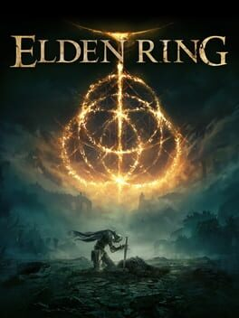
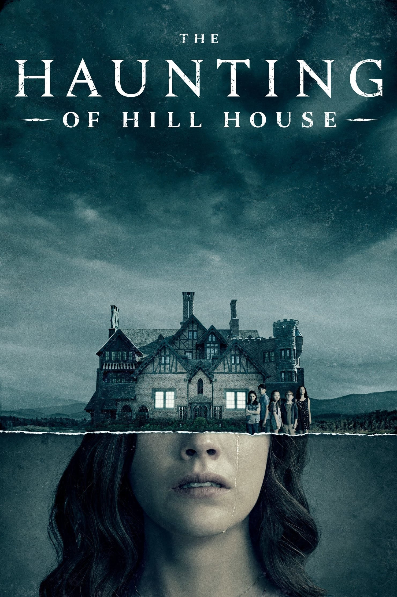

<!DOCTYPE html>
<html lang="en"></html>
<head>
    <meta charset="UTF-8">
    <title>Project 1, My Website</title>
    <link rel="stylesheet" href="css/styles.css">
    <link rel="stylesheet" href="https://use.typekit.net/zgh4nyi.css">
</head>
<body>
    <nav>
        <a class="navelement" href="index.html">HOME</a>
        <a class="navelement" href="likes.html">INTERESTS</a>
        <a class="navelement" href="activities.html">ONLINE ACTIVITIES</a>
    </nav>

    <div class="maincontent">

        <h1>GARRETT'S INTERESTS</h1>
        <p>Through his various online profiles, one can get a strong sense of Garrett's various media interests. Here are some of the most prominent examples.</p>
        
        <div class="mediasection">
        
            <h2>VIDEO GAMES: Favorites</h2>
            <p>Garrett's <a href="https://www.backloggd.com/u/Wistful/">Backloggd page</a> thoroughly showcases his video game interests. Garrett is a fan of Action RPGs, traditional RPGs, open-world, and FPS action games, as showcased in his Top 25 Favorite Games list, the full version of which can be seen <a href="https://www.backloggd.com/u/Wistful/list/my-top-25-favorite-games-of-all-time/">here</a>. Below are some of Garrett's favorite games of these genres. Click the images to go to Garrett's personal review of the game. </p>
        
            <div class="mediaflex">
                <a href="https://www.backloggd.com/u/Wistful/review/273260/"></a>
                <a href="https://www.backloggd.com/u/Wistful/review/349612/"></a>
                <a href="https://www.backloggd.com/u/Wistful/review/274265/"></a>
                <a href="https://www.backloggd.com/u/Wistful/review/509753/"></a>
                <a href="https://www.backloggd.com/u/Wistful/review/273369/"></a>
                <a href="https://www.backloggd.com/u/Wistful/review/274230/"></a>
        </div>
        
        </div>
        
        
        
        <div class="mediasection">
        
            <h2>FILMS & SHOWS: Psychological Horror & Thrillers</h2>
            <p>Garrett's Letterboxd and Serializd pages show his interests in both movies and shows, which are quite varied, but most of his favorites revolve around the genres of psychological horror and thriller. Below are some examples of his favorites within these genres. For more, check out Garrett's <a href="https://letterboxd.com/WistfulAether/">Letterboxd</a> and <a href="https://www.serializd.com/user/Wistful/profile">Serializd</a> profiles. Click on the titles below to go to Garrett's personal review, or to the show's page.</p>
        
            <div class="mediaflex">
                <a href="https://letterboxd.com/film/annihilation/"></a>
                <a href="https://www.serializd.com/review/263564"></a>
                <a href="https://letterboxd.com/wistfulaether/film/the-haunting-2018/"></a>
                <a href="https://letterboxd.com/film/hereditary/"></a>
                <a href="https://letterboxd.com/film/black-bear/"></a>
                <a href="https://letterboxd.com/film/suspiria-2018/"></a>
            </div>
        
        
        </div>


        <div class="mediasectionlast">

            <h2>MUSIC: Alternative and Modern Rock</h2>
            <p>Garrett uses <a href="https://open.spotify.com/user/wistfulaether?si=c79932f4ac124299">Spotify</a> to stream music, where he has several public playlists showing his general taste in music, specifically in Indie/Alternative and Modern Rock. Below is a playlist of his most listened to songs of 2022 via Spotify Wrapped, and a playlist of his favorite Rock/Pop Rock songs that he frequently listens to.</p>

            <iframe style="border-radius:12px" src="https://open.spotify.com/embed/playlist/37i9dQZF1F0sijgNaJdgit?utm_source=generator" width="80%" height="450" frameBorder="0" allowfullscreen="" allow="autoplay; clipboard-write; encrypted-media; fullscreen; picture-in-picture" loading="lazy"></iframe>

            <iframe style="border-radius:12px" src="https://open.spotify.com/embed/playlist/41op2k2AZ2Rk5RQ5XVoW9k?utm_source=generator" width="80%" height="450" frameBorder="0" allowfullscreen="" allow="autoplay; clipboard-write; encrypted-media; fullscreen; picture-in-picture" loading="lazy"></iframe>

        </div>

        

    </div>

    <div class="footerflex">
        <div class="footerelement"> 
            <p>Website designed by Garrett Ashton.</p>
        </div>

        <div class="footerelement">
            <a href="https://twitter.com/WistfulAether"> </a>
        </div>

        <div class="footerelement">
            <a href="https://letterboxd.com/WistfulAether/"> </a>
        </div>

        <div class="footerelement">
            <a href="https://www.backloggd.com/u/Wistful/"> </a>
        </div>

    </div>


</body>